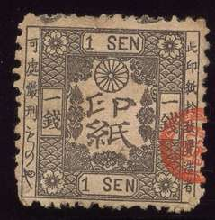
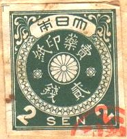
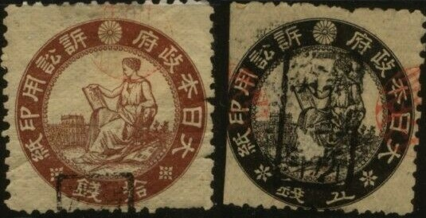

Currency: 1 yen = 100 sen = 1000 rin
Note: on my website many of the
pictures can not be seen! They are of course present in the
catalogue;
contact me if you want to purchase it.



In this design exist: 5 r brown, 1 s orange, 2 s green, 5 s green, 10 s violet, 25 s blue, 50 s grey, 1 Y red.
In the above design (flower on top) I have seen: 2 r orange, 3 r blue, 5 r brown, 1 s blue, 2 s green, 3 s brown and 10 s red, 1 Y blue and yellow. The values 1 r green, 5 s violet, 50 s green and red and 5 Y green and red should also exist.
In the above design I have seen: 1 s brown, 2 s 5 r, brown, 10 s brown and 1 Y blue. The values 1 r green, 5 r green, 3 s brown, 50 s brown, 2 Y blue and 5 Y blue should also exist
The following values exist: 1 r grey, 2 r blue, 3 r yellow, 5 r brown, 1 s brown, 2 s green, 3 s blue, 4 s orange, 5 s violet and 10 s red.
Examples

Presumably 50 s red and 2 s green?
10 values, all in different colors were issue ranging from 1/2 s grey to 1000 s yellow.

9 values were issued (all in different colors), ranging from 3 s grey to 20 Y brown.
(Reduced sizes)
5 c brown, 'GENERAL POST OFFICE OF JAPAN' 5 c brown, 'DEPARTMENT OF COMMUNICACIONS OF JAPAN'
(Reduced sizes)
1 s brown 2 (?) s red 3 s orange 4 s green 5 s blue 10 s red 15 s brown 25 s blue 50 s lilac 1 Y blue and red
These stamps were issued on 7 May 1885.
What is this? Label with inscription "IMPERIAL JAPANESE TELEGRAPH":

Examples:


{kind=link}
{kind=link}
{kind=link}